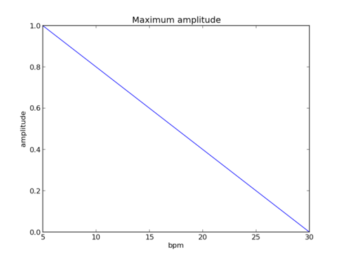

NAOqi Motion - Overview | API
There are three idle control modes:
The idle behavior of the robot is defined body chain per body chain.
The idle control of any body chain can be activated or deactivated at any moment, with ALMotionProxy::setIdlePostureEnabled() and ALMotionProxy::setBreathEnabled(). The last call to either of these functions defines a body chain idle control mode.
Any other user command overrides an idle task.
Transitions to and from idle task are automatic and smooth.
Breathing animation can be activated on the following chains: “Body”, “Legs”, “Arms”, “LArm”, “RArm” and “Head”. The animation only works when the robot is standing.
The breath task can be configured by setting two parameters:
The default breathing configuration is: [['Bpm', 12], ['Amplitude', 0.5]]
Warning
To avoid unstable animations, not all combinations of ‘Bpm’ and ‘Amplitude’ are allowed on the robot. At minimum frequency, all amplitudes are allowed, and at maximum frequency, only minimum amplitude is possible. In-between, a linear interpolation is used to compute the maximum amplitude. If needed, user input amplitude is clipped to satisfy the constraints.
This example shows how to start an idle task on a robot, in breathing mode, and how to change the parameters of the breathing dynamically.
# -*- encoding: UTF-8 -*-
'''Motion: Breath'''
import math
import time
import argparse
from naoqi import ALProxy
def main(robotIP, PORT=9559):
''' Use case of breath API
'''
motionProxy = ALProxy("ALMotion", robotIP, PORT)
postureProxy = ALProxy("ALRobotPosture", robotIP, PORT)
# Wake up robot
motionProxy.wakeUp()
# Send robot to Stand Init
postureProxy.goToPosture("StandInit", 0.5)
# Start breathing
motionProxy.setBreathEnabled('Body', True)
# Get default breath config
print 'Current breath config: ' + str(motionProxy.getBreathConfig())
# Wait for 10 seconds, and let the robot play the breathing animation
time.sleep(10)
# Change breathing configuration to a faster one
print 'Breath faster'
motionProxy.setBreathConfig([['Bpm', 30], ['Amplitude', 0.0]])
# Let the robot play the new animation
time.sleep(10)
# Stop breathing
motionProxy.setBreathEnabled('Body', False)
# Go to rest position
print 'rest'
motionProxy.rest()
if __name__ == "__main__":
parser = argparse.ArgumentParser()
parser.add_argument("--ip", type=str, default="127.0.0.1",
help="Robot ip address")
parser.add_argument("--port", type=int, default=9559,
help="Robot port number")
args = parser.parse_args()
main(args.ip, args.port)